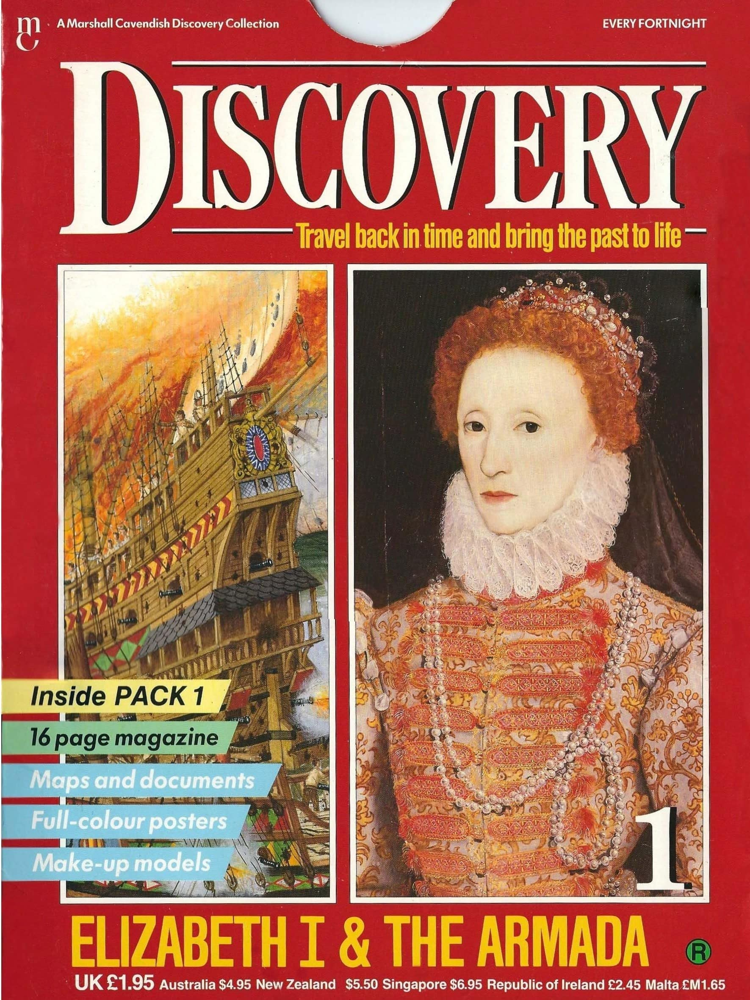
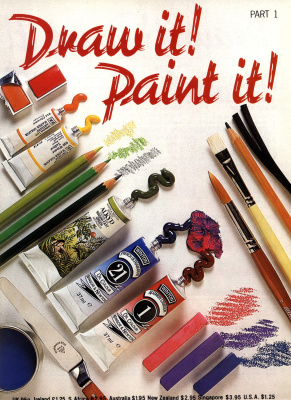
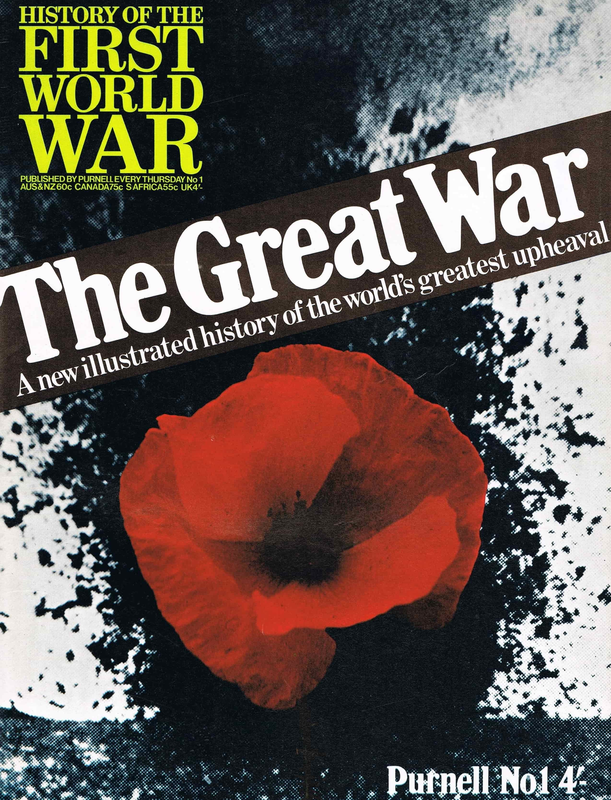
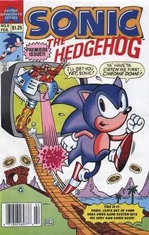

Collections
Please find our entire library to view at your lesure and please let us know your thoughts.
| Save | Like | Cover | Name | Details | Publication Date | Link to Page |
|---|---|---|---|---|---|---|
 |
Classic Adventure | Published 52 books and was created by Fabbri | 1993 | Review | ||
|  | Discovery | Published 60 magazines and was created by Marshall Cavendish | 1986 | Review | ||
|  | Draw It! Paint It! | Published 112 magazines and was created by Marshall Cavendish | 1984 | Review | ||
|  | History Of The First World War | Published 128 magazines and was created by Purnell | 1968 | Review | ||
 |
History Of The Second World War | Published 128 magazines and was created by Purnell | 1970 | Review | ||
 |
Images Of War | Published 72 magazines and was created by Marshall Cavendish | 1987 | Review | ||
 |
Man, Myth & Magic | Published 112 magazines and was created by Purnell | 1971 | Review | ||
 |
Murder Casebook | Published 152 magazines and was created by Marshall Cavendish | 1989 | Review | ||
 |
Sonic The Comic | Published 182 magazines and was created by Fleetway | 1993 | Review | ||
|  | Sonic the Hedgehog | Published 290 issues and was created by Archie Comics | 1991 | Review | ||
 |
StoryTeller | Published 52 issues and was created by Marshall Cavendish | 1992 | Review | ||
 |
Supercook | Published 128 issues and was created by Marshall Cavendish | 1991 | Review |